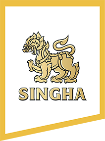

싱하 Singha
싱하(Singha)는 태국의 분로드 양조에서 만든 맥주 브랜드이다. 1933년부터 판매를 시작했으며, 이름은 힌두교의 사자 형상 전설 속 동물 싱하에서 유래했다.
최종 업데이트

싱하는 어떤 브랜드인가
싱하(Singha)는 태국의 Boon Rawd Brewery에서 생산하는 페일 라거 맥주 브랜드이다. 1933년부터 판매를 시작했으며, 브랜드명은 태국어로 전설 속 신성한 사자를 뜻한다.
태국에서 가장 오래되고 인지도가 높은 맥주 중 하나로 알려져 있고, 태국을 찾는 관광객 사이에서도 대표적인 현지 맥주로 통한다. 라벨에는 태국 왕실의 인가를 받아 왕실 문장을 사용한다.
해외 수출도 이어지고 있으며, 한국에는 에스비씨코리아가 수입해 유통한다. 레스토랑, 편의점, 노상 음식점 등에서 쉽게 접할 수 있다.
싱하는 어떻게 시작되고 성장했나
싱하는 1933년 태국 최초의 양조장 중 하나인 Boon Rawd Brewery에서 출시되었다. 설립자 비롬 박디(Bhirom Bhakdi)가 독일과 덴마크에서 양조 기술을 배워 들여오면서 생산이 시작되었다.
1939년에는 태국 왕실로부터 공식 인가를 받아 가루다(Garuda) 문장을 사용할 수 있는 권한을 얻었다. 이후 태국 내 대표 맥주로 자리 잡았고 해외 수출도 활발히 이어가고 있다.
싱하의 브랜드 아이덴티티는 무엇인가
싱하는 태국 왕실의 인가를 받아 라벨에 왕실 문장을 쓰는 태국 대표 라거 맥주이다. 힘과 권위를 상징하는 싱하 사자를 브랜드 상징으로 삼는다.
싱하의 대표 제품과 서비스는 무엇인가
대표 제품은 싱하 오리지널(Singha Original)이며 330ml와 630ml 병으로 판매한다. 캔 제품은 330ml와 490ml 규격이 있다.
알코올 도수는 약 5.0% ABV이고, 100% 보리 몰트와 Saaz, Perle, Hallertau 등 유럽산 홉을 원료로 쓴다. 색은 밝은 금색이며 보리의 깔끔한 단맛과 은은한 꽃·허브 계열 홉 향이 나고 탄산감이 비교적 높다.
싱하 라이트(Singha Light)는 출시 예정으로 알려져 있다. 탄산수 등 무알코올 음료도 판매한다.
싱하는 지금 어떤 상태인가
싱하는 현재 태국을 대표하는 맥주 브랜드로 자리하고 있다. 한국에서는 (주)에스비씨코리아가 정식 수입하며 대형마트, 편의점, 주류 전문점 등에서 구매할 수 있다.
태국 음식점이나 아시아 음식 전문점에서 흔히 판매되고, 여름철이나 매운 음식과 함께 소비가 많다.
싱하 로고는 어떻게 변해왔나
자주 묻는 질문
싱하는 어느 나라 브랜드인가요?
싱하는 태국의 식음료 브랜드입니다.
싱하는 언제 설립되었나요?
싱하는 1933년 설립되었습니다.
싱하의 브랜드 아이덴티티는 무엇인가요?
싱하는 태국 왕실의 인가를 받아 라벨에 왕실 문장을 쓰는 태국 대표 라거 맥주이다.
싱하의 대표 제품은 무엇인가요?
대표 제품은 싱하 오리지널(Singha Original)이며 330ml와 630ml 병으로 판매한다.
싱하는 현재 어떤 상태인가요?
싱하는 현재 태국을 대표하는 맥주 브랜드로 자리하고 있다.
싱하의 공식 웹사이트는 어디인가요?
싱하의 공식 웹사이트는 https://www.singha.com/ 입니다.
출처와 검증
싱하 관련 참고: 공식 웹사이트 · 위키데이터 Q2140520 · 한국어 위키백과 · 영어 위키백과. 브랜드명은 한글과 원어를 함께 표기하되 데이터에 없는 표기는 만들지 않습니다. 기원 국가·설립연도는 검수된 정의문에서 확인된 값을 우선하고, 없을 때만 공식 웹사이트 URL이 일치하는 위키데이터 개체의 값을 씁니다. 위키데이터 값은 2026-11-08 기준입니다.